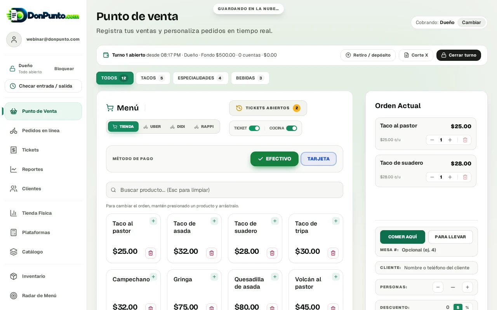
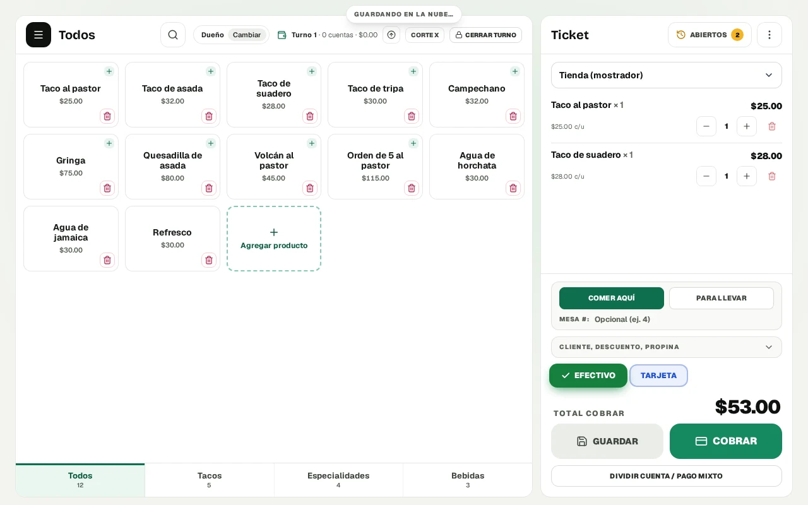
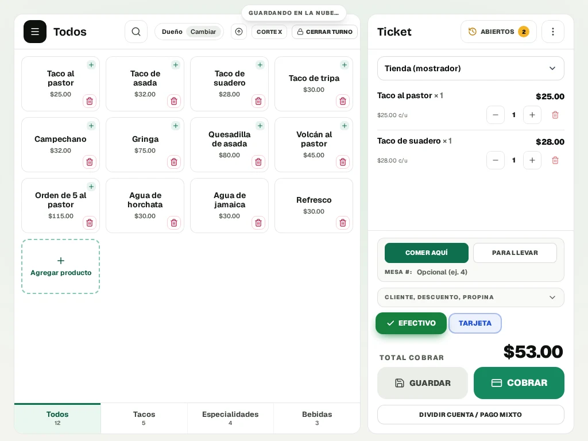
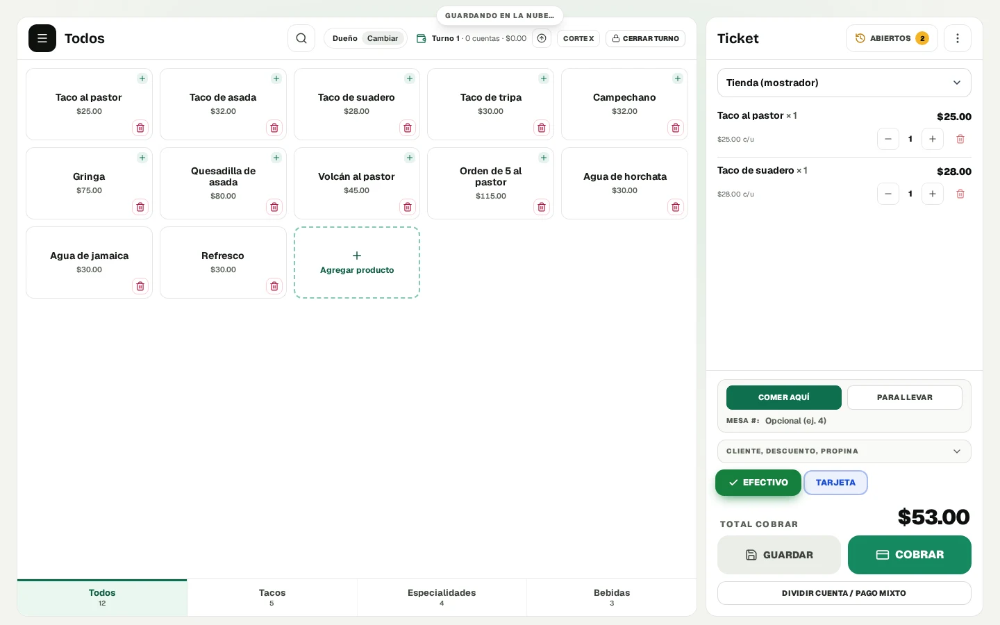
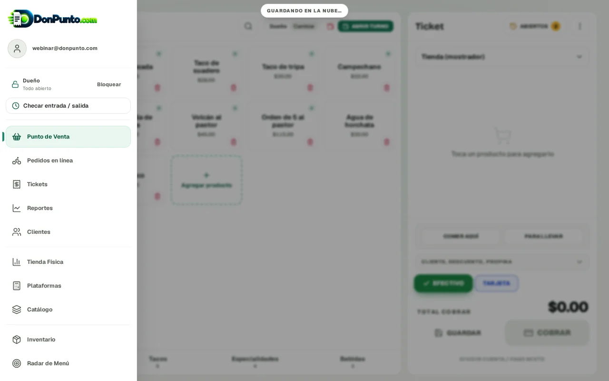

Modo caja rápida
Es opcional y se prende por equipo (en Ajustes o con el botón «Caja rápida» del Punto de venta). Solo aplica en tablet acostada o compu; en celular el POS se ve igual que hoy. Las capturas son de la cuenta demo y usan los colores de Don Punto.





Qué cambia
- Desaparecen el título «Punto de venta» y la barra grande del turno. El turno queda en chiquito arriba (Corte X, retiro/depósito y Cerrar turno).
- Los productos van en botones grandes con el precio en chiquito abajo del nombre. Al dueño le siguen saliendo «Agregar producto», el bote de basura y el arrastrar para reordenar.
- Las categorías van abajo, como pestañas que se acomodan en renglones (sin scroll de lado).
- El ticket va a la derecha. Arriba, una lista para elegir dónde se vendió (Tienda o la app). «ABIERTOS» abre las cuentas abiertas y el botón ⋮ prende o apaga la impresión del ticket y de la comanda.
- Se cobra igual que hoy: COBRAR hace lo mismo que FINALIZAR, con las mismas validaciones de mesa, mesero y pedido.